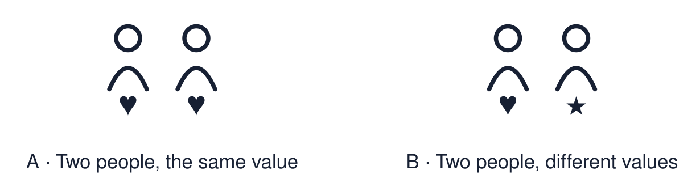

Arrival choices
Previous lesson reminder:

Start with 1 and 2. Try 3 and 4 when ready. Reading and exact scribing are available.
1 Why do readers often use a pointer with a Torah scroll?
Support: Use the reminder strip or talk it through with an adult.
2 Which meaning fits belief?
Support: Choose: Something a person holds to be true OR Something a person thinks is important in how to live.
3 What value do Aisha and Tom share?
Support: Use the model evidence anchor A, B or read one relevant card together.
4 Do Aisha and Tom have the same beliefs about God?
Support: Give a reason when ready.
Stretch: use a precise example or explain which detail supports your answer.
Evidence cards
Read, point or listen. Keep the source label with any detail you use.
A Aisha
Fictional profile: Aisha is 15 and Muslim. She gives part of her pocket money to charity. She says, “My faith teaches me to help people in need.”
Source: Authored profile
Limit: This is one person's view. Other Muslims may describe their faith differently.
B Tom
Fictional profile: Tom is 16 and a Humanist. He does not follow a religion. He helps at a food bank. He says, “People should look after each other.”
Source: Authored profile
Limit: This is one person's view. Other Humanists may describe their views differently.
C Same and different
Aisha and Tom have different beliefs about God. They share a value: helping others.
Source: Authored classroom resource
Limit: Sharing one value does not make two worldviews the same.
D Values cards
Kindness. Fairness. Family. Helping others. Peace.
Source: Authored classroom resource
Limit: A person can hold many values. A card shows only one.
Shared investigation
1. Sort each statement: Aisha, Tom or both.
2. Name the value that both people share.
Work with a partner or adult, or use your own table. One person suggests; the other checks the evidence. Swap after one turn. Passing is allowed.
Move or match the cards
| Cards to use |
|---|
| Thinks helping others is important |
| Does not follow a religion |
| Gives money to charity because of faith |
Possible labels: Aisha / Both / Tom
Support: Show two choices. Read one short instruction. Point, match or say a word, then add a reason when ready.
Further challenge: Explain how two people can share a value but have different reasons for it.
Supported independent task
Complete this route only. Notice one similarity between two people's beliefs or values.
1. Listen to the two profiles.
2. Choose one value card that fits both people.
3. Say or finish: Both people ___.
Support: Show two choices. Read one short instruction. Point, match or say a word, then add a reason when ready. Complete the organiser one space at a time. Both people ___.
An adult may read or scribe your exact response. They should not choose the answer.
Standard independent task
Complete this route only. Notice one similarity between two people's beliefs or values.
1. Read or listen to the two profiles.
2. Find one similarity between Aisha and Tom.
3. Finish the sentence: Both people ___.
Support: Both people ___.
Check the required evidence and revise one detail.
Stretch independent task
Complete this route only. Notice one similarity between two people's beliefs or values.
1. Find one similarity and one difference between Aisha and Tom.
2. Write a “Both people ___” sentence.
3. Explain the different reason each person gives.
Support: Choose the evidence independently. Use the frame only if it helps.
Explain how two people can share a value but have different reasons for it.
Exit ticket
Choose a response mode. You may give your answers privately to an adult.
What value do Aisha and Tom share?
Do Aisha and Tom have the same beliefs about God?
Support: Both people ___.
Further challenge: Explain how two people can share a value but have different reasons for it.